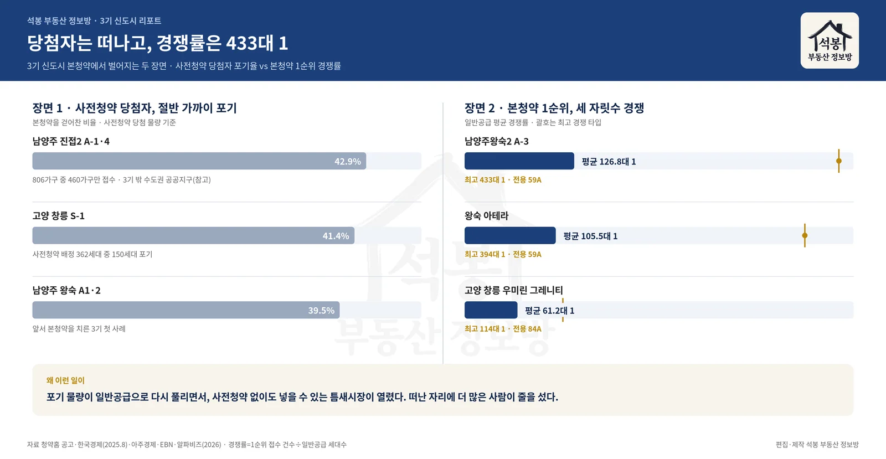
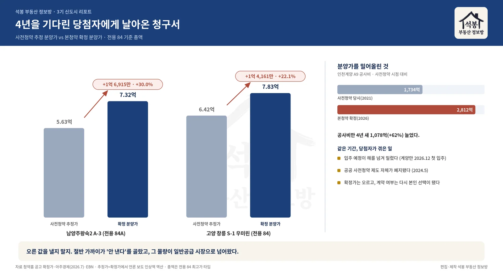
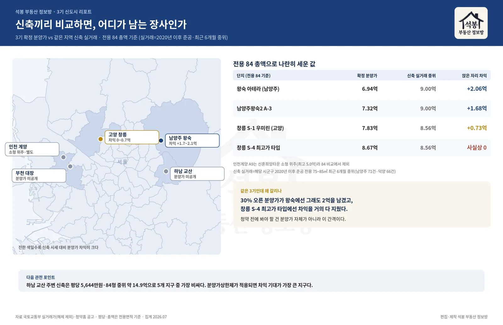

4년을 기다려 당첨된 사람들이 계약을 걷어차고 있습니다. 고양 창릉 S-1에서는 사전청약 당첨자 열 명 중 네 명이 본청약을 포기했습니다. 그런데 남양주 왕숙에서는 본청약 일반공급 한 채에 433명이 줄을 섰습니다. 떠나는 사람과 몰려드는 사람이 같은 단지에 공존하는 것, 이게 지금 3기 신도시에서 벌어지고 있는 일입니다. 이 모순을 숫자로 풀어보겠습니다.

당첨자들은 왜 떠났나
청구서 때문입니다. 사전청약 당첨자들은 2021년에 "이 정도 가격"이라는 추정 분양가를 보고 청약을 넣었습니다. 그리고 4년 뒤 본청약에서 확정 분양가를 받아들었는데, 숫자가 달라져 있었습니다.
남양주왕숙2 A-3블록 전용 84A(약 25.4평)의 확정 분양가는 7억 3,245만원. 사전청약 때 추정가보다 1억 6,915만원, 30.0%가 올랐습니다. 고양 창릉 S-1(우미린 그레니티)도 7억 8,340만원으로 확정되면서 1억 4,161만원(22.1%)이 뛰었습니다. 4년 사이 소득이 30% 오른 당첨자는 많지 않았을 겁니다.

가격만 오른 게 아닙니다. 그 사이 입주 예정은 해를 넘겨 밀렸고(현재 첫 입주는 인천 계양이 유일하게 2026년 12월로 잡혀 있습니다), 공공 사전청약 제도는 2024년 5월 아예 폐지됐습니다. 분양가가 왜 올랐는지는 공사비를 보면 답이 나옵니다. 인천계양 A9블록 공사비는 사전청약 당시 1,734억원에서 본청약 시점 2,812억원으로 불었습니다. 4년 새 1,078억원, 62%입니다.
결과가 포기 행렬입니다. 먼저 본청약을 치른 남양주 왕숙 A1·2에서 당첨자 39.5%가 떠났고, 창릉 S-1은 사전청약 배정 362세대 중 150세대(41.4%)가 계약을 걷어찼습니다. 3기 지구는 아니지만 같은 수도권 공공 사전청약 단지였던 남양주 진접2에서는 806가구 중 460가구만 접수해 포기율이 43%에 달했습니다. 절반 가까이가 "이 값이면 안 산다"를 고른 셈입니다.
여기서부터는 회원에게 보여드립니다
카카오 로그인 3초면 전문을 읽을 수 있습니다. 무료입니다.
가입하시면 지역 시장조사 보고서(약식)를 2회 무료로 요청하실 수 있습니다.
이미 회원이면 같은 버튼으로 로그인만 됩니다
그런데 왜 433대 1이 나왔나
포기한 물량은 사라지지 않습니다. 일반공급으로 다시 풀립니다. 사전청약 당첨 이력이 없어도, 통장만 있으면 넣을 수 있는 물량이 됩니다. 여기서 틈새시장이 열렸습니다.
올해 5월 말 접수한 남양주왕숙2 A-3 일반공급은 163가구 모집에 2만 671명이 신청해 평균 126.8대 1을 기록했습니다. 여기서 경쟁률은 1순위 경쟁률, 그러니까 1순위 접수 건수를 일반공급 세대수로 나눈 값입니다(2순위와 특별공급은 빼고 계산합니다). 전용 59A 타입은 433대 1까지 치솟았습니다. 같은 시기 왕숙 아테라는 평균 105.5대 1(59A는 393.6대 1), 창릉 우미린 그레니티는 평균 61.2대 1(84A는 113.7대 1)이었습니다.
포기율 40%짜리 단지에 세 자릿수 경쟁률. 언뜻 모순 같지만 실은 같은 이야기의 앞뒷면입니다. 사전청약 당첨자에게는 "4년 전 약속보다 1억 넘게 오른 가격"이고, 지금 처음 넣는 사람에게는 "그래도 주변 새 아파트보다 싼 가격"이기 때문입니다.
실거래로 따져봤습니다, 정말 남는 장사인지
여기서부터가 저희가 직접 계산한 부분입니다. 흔히 "3기 분양가가 주변 시세보다 싸다, 비싸다"를 이야기할 때 그 동네 아파트 전체 평균과 비교하는데, 이건 반칙에 가깝습니다. 20년 된 구축까지 섞인 평균과 새 아파트 분양가를 맞대면 결론이 왜곡되기 때문입니다. 그래서 조건을 좁혔습니다. 2020년 이후 준공된 신축, 전용 75~85㎡, 최근 6개월 실거래(해제 거래 제외)의 중위 가격. 새 아파트끼리, 같은 크기끼리 비교한 겁니다.

단지 (전용 84 기준)
확정 분양가
같은 지역 신축 실거래 중위
차이
왕숙 아테라 (남양주)
6.94억
9.00억
+2.06억
남양주왕숙2 A-3
7.32억
9.00억
+1.68억
창릉 S-1 우미린 (고양)
7.83억
8.56억
+0.73억
창릉 S-4 최고가 타입
8.67억
8.56억
사실상 0
남양주 신축 84형의 실거래 중위는 9억원(71건), 고양 덕양구는 8억 5,600만원(66건)입니다. 왕숙 아테라를 6억 9,400만원에 받았다면 장부상 2억이 앉은 자리에서 생기는 구조입니다. 433대 1이 괜히 나온 숫자가 아닙니다.
주목할 건 창릉입니다. 같은 3기인데 S-1 우미린의 간격은 7,300만원으로 줄고, S-4 최고가 타입(8억 6,700만원)은 덕양구 신축 중위와 사실상 같은 값입니다. 30% 오른 분양가가 왕숙에서는 그래도 2억을 남겼지만, 창릉에서는 차익을 거의 다 지워버린 겁니다. 청약 전에 봐야 할 것은 분양가 그 자체가 아니라 이 간격입니다.
숫자를 읽을 때 유의할 점 두 가지입니다. 첫째, 위 실거래 중위는 시군구 단위라 창릉·왕숙 지구 바로 옆 단지 시세와는 차이가 있을 수 있습니다. 둘째, 이 차이는 입주 시점(수년 뒤) 시세가 아니라 지금 시세 기준의 장부상 계산입니다. 참고용이지, 수익을 보장하는 숫자가 아닙니다.
창릉 두 블록, 이번 주 수요일에 닫힙니다
마침 창릉의 다음 물량이 지금 접수 중입니다. S-4블록 공공분양 1,024세대와 S-3블록 이익공유형 1,282세대가 7월 29일 수요일에 접수를 마감합니다. 당첨자 발표는 8월 18~19일입니다.
단, 두 블록은 성격이 다릅니다. S-4는 일반적인 공공분양입니다. 위에서 본 대로 최고가 타입은 신축 시세와의 간격이 얇으니, 타입별 가격표를 꼼꼼히 비교하고 들어가야 합니다. S-3 이익공유형은 분양가가 3억 9,000만원부터로 훨씬 낮은 대신, 되팔 때 시세차익의 30%를 공공과 나누는 조건이 붙습니다. 싼 데는 이유가 있는 유형이라, 경쟁률이나 가격만 보고 뛰어들면 나중에 계산이 달라집니다.
남은 두 지구가 진짜 승부처일 수 있습니다
하남 교산과 부천 대장은 아직 확정 분양가가 나오지 않았습니다. 그런데 저희 실거래 데이터에서 흥미로운 대목이 하나 보입니다. 하남의 신축 평당 실거래 중위는 5,644만원(전용면적 기준)이고, 신축 84형의 실거래 중위 총액은 약 14억 8,500만원으로 5개 지구 주변에서 가장 비쌉니다. 분양가상한제가 적용되는 공공분양 특성상, 주변 시세가 비쌀수록 분양가와의 간격은 벌어지기 쉽습니다. 작년 교산 푸르지오 더퍼스트 청약에 평균 263대 1이 몰렸던 것도 같은 맥락입니다.
정리하면 이렇습니다. 3기 신도시는 지금 "사전청약 당첨자에게는 배신, 신규 청약자에게는 기회"라는 두 얼굴로 움직이고 있습니다. 다만 그 기회의 크기는 지구마다 다릅니다. 왕숙처럼 2억이 남는 곳이 있고, 창릉 S-4 최고가 타입처럼 간격이 사라진 곳도 있습니다. 다음 계산서의 주인공은 교산입니다. 분양가가 공개되는 대로 오늘과 같은 방식으로 다시 따져보겠습니다.
자료: 국토교통부 청약홈 공고(확정 분양가·접수 일정), 국토교통부 실거래가(신축 중위가 자체 집계, 해제 거래 제외), 한국경제·아주경제·EBN·고양신문·알파비즈 보도(포기율·경쟁률·공사비) · 분양가와 실거래 총액은 전용 84 기준, 평당가는 전용면적 기준 · 집계 2026.07 · 편집·제작 석봉 부동산 정보방